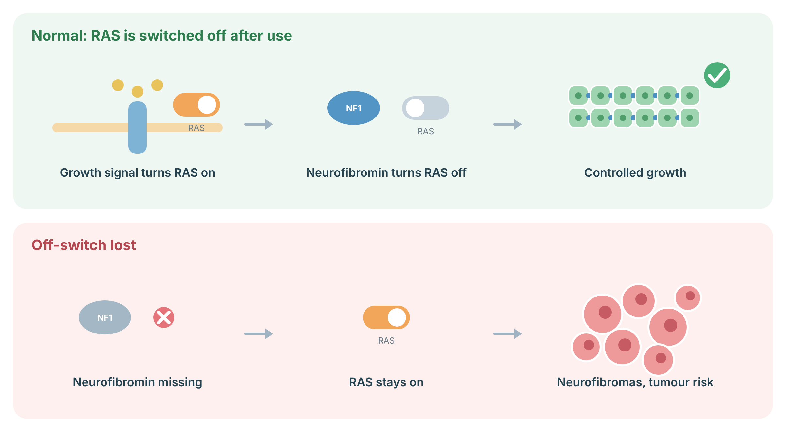

Understanding NF1
NF1 is a lifelong genetic condition. It can affect the skin, nerves, eyes, bones, blood vessels, learning and, less often, internal organs. Most NF1 tumours are benign. A small proportion can become cancerous. Good care focuses on regular clinical review, fast assessment of new warning signs and targeted imaging when it can change management.
NF1 is an autosomal dominant tumour-predisposition and multisystem disorder caused by a heterozygous pathogenic variant in NF1, encoding neurofibromin, a negative regulator of RAS-MAPK signalling. Penetrance is essentially complete, but expression is highly variable and age dependent. About half of affected individuals have a de novo variant. Diagnosis may be clinical or molecular using the 2021 international consensus criteria.
NF1 should not be conflated with NF2-related schwannomatosis or Legius syndrome. Constitutional generalized NF1, constitutional whole-gene deletions, specific genotype-associated phenotypes and mosaic NF1 differ in expected severity, but surveillance remains primarily phenotype driven.
A protein called RAS works like an on-switch for cell growth: growth signals turn it on, and neurofibromin (made by NF1) turns it off again. When neurofibromin is missing, RAS stays on, cells grow more than they should, and benign nerve tumours (neurofibromas) and some cancers can develop.
NF1: Most NF1 tumours arise when a cell loses the second working NF1 copy.

Sources: Ratner N, Miller SJ. Nat Rev Cancer 2015;15:290–301 (PubMed).
Lifetime risks and risk modifiers
Risk is not the same for every person with NF1. The most important predictors are the type and burden of plexiform tumours, changes in a known tumour, age, previous radiation treatment, family history and certain large gene deletions. The table gives approximate ranges, not a personal forecast.
| NF1 subgroup | Outcome | Approximate risk | Interpretation |
|---|---|---|---|
| Generalized constitutional NF1 | MPNST | About 8%-13% lifetime | Risk concentrates in people with internal or large plexiform neurofibromas, atypical neurofibromatous neoplasms, prior radiotherapy, or whole-gene deletion. |
| Generalized constitutional NF1 | Optic pathway glioma | About 15%-20% develop an OPG, mostly in childhood; only a minority become symptomatic | Highest clinical risk is in early childhood. Tumour prevalence falls with age. |
| Women with generalized NF1 | Breast cancer | Approximately 17%-20% lifetime in several cohorts; risk before age 50 is about 4- to 5-fold higher than population risk | Absolute estimates vary by cohort. Contralateral breast cancer risk is also increased after a first breast cancer. |
| Generalized constitutional NF1 | Pheochromocytoma / paraganglioma | Usually cited around 0.1%-5.7%; higher in selected or prospectively screened cohorts | Test when hypertensive, symptomatic, pregnant or planning pregnancy, or before major elective surgery when clinically indicated. |
| NF1 whole-gene deletion or severe high-risk phenotype | MPNST and high plexiform tumour burden | Higher than average NF1 risk; precise penetrance is not established | More intensive expert follow-up is reasonable. Genotype alone does not replace symptom review or imaging of known lesions. |
| Mosaic/segmental NF1 | NF1-associated tumours | Unknown and highly dependent on tissue distribution | Risk may be lower when disease is truly localized, but internal involvement and gonadal mosaicism cannot be excluded clinically. |
Other increased tumour risks include non-optic glioma, gastrointestinal stromal tumour, juvenile myelomonocytic leukemia, rhabdomyosarcoma and selected endocrine or neural crest tumours. Their absolute risks are low enough that routine population-wide imaging or laboratory screening is generally not recommended in asymptomatic people.
Surveillance for generalized constitutional NF1
Plan one NF1-focused review every year. Children need eye checks, growth and development review, blood pressure and spine assessment. Adults need yearly review for tumour changes, pain, nerve symptoms, blood pressure, bone health and mental health. Imaging is usually targeted to symptoms or known tumours.
All ages
Core surveillanceChildren and adolescents
Age-adaptedAdults
Annual reviewBreast surveillance for women with NF1
Moderately increased riskPheochromocytoma and paraganglioma
Symptom-triggered testingHigh-risk genotypes and phenotypes
Some NF1 gene changes are linked with a milder or more severe pattern. A full deletion of the NF1 gene is often associated with more neurofibromas and a higher tumour burden. A few specific variants are linked with mostly pigment changes and fewer skin tumours. Your care plan should still follow what is happening in your body, not the genetic result alone.
Whole-gene deletions, large or rapidly growing plexiform neurofibromas, high internal tumour burden, prior radiotherapy, atypical neurofibromatous neoplasms and certain severe missense regions such as codons 844-848 warrant a lower threshold for expert review and targeted imaging. The NF1 p.Met992del and p.Arg1809 variants are often associated with few or no cutaneous neurofibromas, although other NF1 complications can occur. Genotype-phenotype correlations are clinically useful but incomplete.
Mosaic or segmental NF1
Mosaic NF1 means the NF1 change is present in only some cells. Signs may be limited to one body area, but the true distribution can be hard to know. Follow-up should match the organs and tissues involved. Children can sometimes inherit generalized NF1 if reproductive cells carry the variant.
Confirm the diagnosis when possible using testing of blood and, if negative but suspicion remains, affected tissue with a sensitive assay. Surveillance is individualized to the distribution and severity of disease. Generalized annual review is prudent when internal involvement cannot be excluded. Reproductive risk is below 50% but may be clinically meaningful and cannot be estimated reliably from the visible extent of mosaicism.
Risk-reducing surgery and medical treatment
There is no operation or medicine that prevents all NF1 tumours. Surgery is used for tumours that cause symptoms, threaten function or appear suspicious. Some inoperable plexiform neurofibromas can shrink with a MEK inhibitor. These medicines require specialist monitoring and are treatment, not routine prevention.
Surgery. Complete excision is preferred for resectable symptomatic plexiform neurofibroma and is essential for confirmed or strongly suspected MPNST when feasible. Prophylactic removal of every asymptomatic plexiform lesion is not recommended. Refer suspected MPNST to a sarcoma multidisciplinary team before unplanned biopsy or excision.
MEK inhibition. Selumetinib is established for selected children with symptomatic, inoperable NF1-associated plexiform neurofibromas and has prospective adult activity. Regulatory indications and public coverage change. Baseline and serial cardiac, ophthalmologic, dermatologic, hepatic and creatine kinase monitoring should follow the current product monograph and institutional pathway. Other MEK inhibitors remain context dependent or trial based.
Breast surgery. NF1 alone generally does not reach the evidence threshold for routine risk-reducing mastectomy. Decisions after breast cancer should consider the elevated contralateral risk, age, treatment history and patient values.
Hormones and chemoprevention. No NF1-specific evidence supports tamoxifen, raloxifene, aromatase inhibitors, aspirin or other medicines solely to prevent an NF1-associated cancer. Standard breast chemoprevention can be considered when a validated non-NF1 risk assessment independently supports it. Follow current Canadian dosing and contraindication guidance, including thromboembolic and endometrial risk assessment for selective estrogen receptor modulators.
Genetic counselling
Each child of a person with generalized NF1 has a 1 in 2 chance of inheriting the condition. The severity cannot be predicted from the parent’s symptoms. Relatives can be offered genetic counselling and targeted testing when the family variant is known. Reproductive options are personal choices.
Lifestyle, nutrition and daily health
No diet, supplement or exercise program has been shown to prevent NF1 tumours. Healthy habits still matter. They support bone, heart and mental health. Avoid smoking. Limit alcohol. Stay active in ways that are safe for your bones and spine. Seek help early for persistent pain, sleep problems or low mood.
Recommend standard cancer-prevention behaviours: tobacco avoidance, healthy weight, regular aerobic and resistance activity adapted to orthopedic limitations, alcohol limitation, sun protection, age-appropriate vaccination and routine population screening unrelated to NF1. Ensure adequate calcium intake and vitamin D according to Canadian age and risk guidance. Do not recommend high-dose supplements, restrictive diets, ketogenic diets, antioxidants or microbiome interventions as NF1 tumour prevention.
Pregnancy, anesthesia and other NF1-specific issues
Most people with NF1 can have a successful pregnancy. Blood pressure problems and some pregnancy complications are more common. Neurofibromas can grow during pregnancy. Tell the obstetric and anesthesia teams about NF1 early.
Emerging and investigational prevention
Research is testing better scans, blood markers and medicines for early tumour detection or prevention. These approaches are not ready for routine care. Clinical trials may be appropriate for selected people.
Trial-only or not yet validated: circulating tumour DNA for early MPNST detection; radiomics or artificial intelligence analysis of whole-body MRI; routine serial metabolic imaging; preventive MEK inhibition for asymptomatic tumours; gene replacement or gene editing; vaccines or immune prevention; microbiome-directed prevention.
Any investigational strategy should be used through a research protocol or an expert centre with clear consent, predefined outcomes and a plan for incidental findings.
Summary of recommendations
Generalized NF1, children
Annual NF1 review, blood pressure, growth, puberty, spine and limb examination, development and school screening. Annual ophthalmology in early childhood, then at least every 2 years to adulthood under ERN guidance when normal. MRI only for abnormal or unreliable assessment.
Generalized NF1, adults
Annual tumour, neurologic, cardiovascular, skeletal and psychosocial review. Target imaging to symptoms or known lesions. Consider one whole-body MRI at transition to adulthood, then individualize.
Women with NF1
Annual breast imaging from age 30. Prefer annual MRI age 30-50 where available and appropriate; mammography remains recommended or acceptable depending on jurisdiction. After 50, follow national screening plus individualized risk.
High-risk phenotype
Whole-gene deletion, high internal tumour burden, atypical lesions, previous radiotherapy or rapid tumour change warrant expert multidisciplinary care and a lower threshold for regional MRI and metabolic imaging.
Mosaic NF1
Tailor surveillance to distribution, but do not assume visible segmental disease excludes internal or gonadal involvement. Offer molecular confirmation and reproductive counselling.
Cross-cutting red flags
Persistent or nocturnal pain, rapid growth, hardening of a lesion, weakness, sensory loss, visual decline, precocious puberty, severe new headache, unexplained hypertension or focal neurologic change need prompt assessment.
References
- Carton C, Evans DG, Blanco I, et al. ERN GENTURIS tumour surveillance guidelines for individuals with neurofibromatosis type 1. European Journal of Human Genetics. 2023;31:289-301.
- Friedman JM. Neurofibromatosis 1. GeneReviews®. Updated April 3, 2025. University of Washington, Seattle.
- Stewart DR, Korf BR, Nathanson KL, Stevenson DA, Yohay K. Care of adults with neurofibromatosis type 1: a clinical practice resource of the American College of Medical Genetics and Genomics. Genetics in Medicine. 2018;20:671-682.
- Miller DT, Freedenberg D, Schorry E, et al. Health Supervision for Children With Neurofibromatosis Type 1. Pediatrics. 2019;143:e20190660.
- Legius E, Messiaen L, Wolkenstein P, et al. Revised diagnostic criteria for neurofibromatosis type 1 and Legius syndrome: an international consensus recommendation. Genetics in Medicine. 2021;23:1506-1513.
- Evans DGR, Kallionpää RA, Clementi M, et al. Breast cancer in neurofibromatosis 1: survival and risk of contralateral breast cancer in a five-country cohort study. Genetics in Medicine. 2020;22:398-406.
- McCaughan JA, Holloway SM, Davidson R, Lam WW. Further evidence of the increased risk for malignant peripheral nerve sheath tumour from a Scottish cohort of patients with neurofibromatosis type 1. Journal of Medical Genetics. 2007;44:463-466.
- Higham CS, Dombi E, Rogiers A, et al. The characteristics of 76 atypical neurofibromas as precursors to neurofibromatosis 1-associated malignant peripheral nerve sheath tumors. Neuro-Oncology. 2018;20:818-825.
- Gross AM, Wolters PL, Dombi E, et al. Selumetinib in children with clinically inoperable neurofibromatosis type 1-related plexiform neurofibromas. New England Journal of Medicine. 2020;382:1430-1442.
- Gross AM, O’Sullivan Coyne G, Dombi E, et al. Selumetinib in adults with NF1 and inoperable plexiform neurofibroma: a phase 2 trial. Nature Medicine. 2025;31:105-115.
- Campen CJ, Gutmann DH. Optic pathway gliomas in neurofibromatosis type 1. Journal of Child Neurology. 2018;33:73-81.
- Gruber LM, Erickson D, Babovic-Vuksanovic D, Thompson GB, Young WF Jr, Bancos I. Pheochromocytoma and paraganglioma in patients with neurofibromatosis type 1. Clinical Endocrinology. 2017;86:141-149.
- Evans DGR, O’Hara C, Wilding A, et al. Mortality in neurofibromatosis 1: in North West England. European Journal of Human Genetics. 2011;19:1187-1191.
- Sharif S, Ferner R, Birch JM, et al. Second primary tumors in neurofibromatosis 1 patients treated for optic glioma: substantial risks after radiotherapy. Journal of Clinical Oncology. 2006;24:2570-2575.
- Bettegowda C, Upadhayaya M, Evans DG, et al. Genotype-phenotype correlations in neurofibromatosis and their potential clinical use. Neurology. 2021;97:S91-S98.